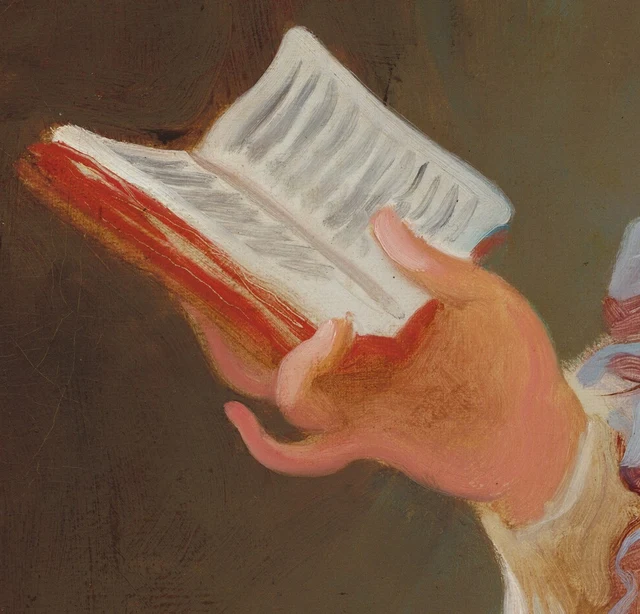
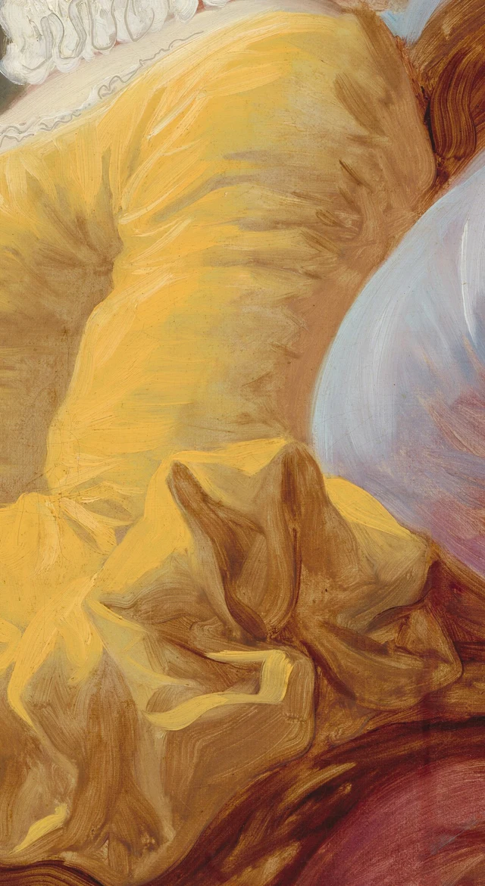
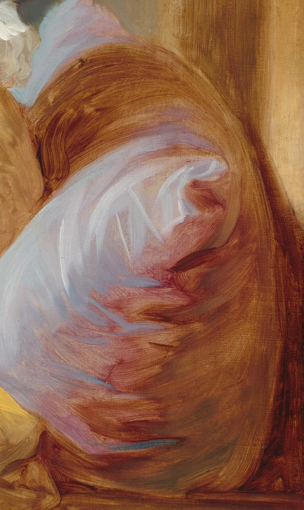

Beginnen wir mit dem kleinen Buch in ihrer Hand. Vom roten Einband hebt sich ein schmaler Rand aus dem Dunkel ab. Die aufgeschlagenen Seiten richten sich nach oben; ein paar graue Pinselspuren wirken wie gedruckte Zeilen. Fast möchten wir dem Blick der Leserin folgen und selbst nachlesen, was dort steht. Doch auch in der Vergrößerung lässt sich kein Satz entziffern.
Treten wir wieder etwas zurück. Was das Buch enthält, bleibt uns verschlossen. Dass hier jemand liest, ist dagegen deutlich zu sehen.

An diesem Unterschied setzt die folgende Betrachtung an. Die Aufmerksamkeit der jungen Frau hat ein erkennbares Ziel. Wir können dieses Ziel sehen, ohne dadurch an die Stelle der Leserin zu treten. Gesenkte Lider, die Hand unter dem Buch und der am Kissen ruhende Körper geben einer inneren Tätigkeit eine sichtbare Haltung. Die Buchseiten setzen dem, was sich auf diese Weise zeigen lässt, zugleich eine Grenze. Diese Lesart wird hier aus dem Bild entwickelt; sie gibt keine belegte Äußerung des Malers wieder.
Das um 1769 entstandene Werk stammt von dem französischen Maler Jean Honoré Fragonard (1732–1806). Es steht in Verbindung mit einer Gruppe von Halbfigurenbildern, die meist als „Fantasiefiguren“ oder „Fantasieporträts“ bezeichnet werden. Ausdrucksvolle Kleidung und eine auffällige Pinselführung machen darin die Haltung der Figuren selbst zum Gegenstand des Betrachtens. Dieser Zusammenhang hilft uns, auch die Leserin in zweierlei Hinsicht wahrzunehmen: als glaubhafte Gestalt aus dem Leben und als bewusst gestaltetes Bild. Zum Werk und zur Werkgruppe
1 Bevor der Blick die Buchseiten erreicht
Ihr Kopf neigt sich nach links unten. Vor dem dunklen Hintergrund treten Nasenrücken, Lippen und Kinn als zusammenhängendes Profil hervor. Das gesenkte Lid und eine feine dunkle Spur darunter lassen uns ihren Blick nach unten weiterdenken. Folgen wir dieser Richtung mit den Augen, treffen wir nicht sofort auf das Buch. Zwischen Gesicht und Seiten liegt ein graubrauner Freiraum. Erst wenn unser Blick ihn durchquert hat, erreicht er das helle Papier.
Dieser Abstand ist wichtig. Die Leserin hält das Buch weder dicht vor das Gesicht noch mitten vor die Brust, als wollte sie es uns vorzeigen. Es befindet sich eher links im Bild und wird von einer Hand von unten gestützt. Der Daumen liegt auf der geöffneten Seite. Die Fingerspitzen berühren den roten Einband nur an wenigen Stellen; der gekrümmte kleine Finger steht etwas ab. Dass uns das Buch leicht und handlich vorkommt, verdanken wir zunächst dieser Hand. Ihre Haltung lässt uns sein geringes Gewicht spüren.

Schauen wir uns die beiden Seiten genauer an. Rechts sind die grauen Spuren länger und schräg in Richtung der Papierfläche angeordnet. Links stehen sie dichter, bleiben blasser und drängen sich zum Falz hin zusammen. Das Weiß füllt die Form keineswegs gleichmäßig aus. Helligkeitsunterschiede an den Rändern, in den gebogenen Flächen und nahe dem Buchrücken lassen einen dünnen, bereits aufgeblätterten Gegenstand entstehen. Darunter zeichnet sich die schmale, nach unten umgeschlagene rote Kante des Einbands ab und hebt das helle Papier noch einmal hervor.
Fragonard muss keine gedruckten Wörter abschreiben, damit wir ein Buch erkennen. Würden wir die grauen Striche als Geheimschrift behandeln, die nur auf ihre Entschlüsselung wartet, ginge ihre unmittelbare Aufgabe leicht verloren. Sie zeigen zunächst, in welche Richtung die Seiten verlaufen, wie sie sich biegen und wie dünn sie sind. Die Spuren genügen, um Schrift anzudeuten. Was diese Schrift mitteilt, bleibt offen.
Auch ihr Gesicht liefert dafür keine fertige Antwort. Die junge Frau lacht nicht auffällig, runzelt nicht die Stirn und weint nicht. Wir nehmen Konzentration wahr, erfahren aber kaum, welche Stelle sie gerade fesselt. Das Bild hält einen Unterschied fest: Wohin sich die Aufmerksamkeit eines Menschen richtet, kann in den Beziehungen seines Körpers zu den Dingen sichtbar werden. Damit ist noch nicht alles, was diese Aufmerksamkeit erfüllt, an die Betrachtenden weitergegeben.
2 Wie der Körper Halt findet
Zum Lesen gehört hier mehr als ein gesenkter Kopf. Schulter und Rücken lehnen am Kissen. Der andere Unterarm liegt quer im unteren Bildbereich, und die dunkle Kante der Armlehne zieht sich von links nach rechts. Weil der Oberkörper Halt hat, wirkt auch die Hand mit dem Buch nicht, als müsse sie sich mühsam in der Luft halten. Unten verbinden die Falten des gelben Rocks und des Ärmels den Körper mit dem Sitz. Über dieser gewichtigen Anordnung beugt sich der Kopf leicht zum Buch hinab.
Die Armlehne durchläuft fast die gesamte Bildbreite und gibt unserem Blick einen festen Anhaltspunkt. Dagegen weisen Buchkanten, Nasenrücken, Kragen und Schulter in unterschiedliche schräge Richtungen. Wir brauchen kein genaues geometrisches Schema darüberzulegen, um das Verhältnis zu spüren: Die waagerechte Stütze nimmt die kleinen Neigungen oberhalb von ihr auf. Die Haltung beim Lesen wird vom ganzen Körper und von den Möbeln gemeinsam getragen. Nur die Augen herauszugreifen, würde einen wichtigen Teil dieser Haltung übersehen.
Am stärksten fällt zunächst das gelbe Kleid auf. Auf der Schulter liegt eine helle Rundung; weiter unten am Arm geht sie allmählich in Gelbbraun über. Am weiten Ärmelaufschlag schlagen die Falten plötzlich um und zeigen mehrere dunklere Innenseiten. Das Gelb zieht unsere Aufmerksamkeit auf den Körper, hält sie dort aber nicht dauerhaft fest. Der weiße Kragen führt zum Hals hinauf, die helle Stirn fängt den Blick auf, und die Wendung des Gesichts lenkt ihn nach links zum kleinen Buch. Die auffällige Kleidung wird so Teil eines Weges durch das Bild.

Das Licht beleuchtet die Dinge nicht überall auf dieselbe Weise. Auf Stirn und Nasenrücken bündelt es sich, über die Hand breitet es sich warm und flächig aus, am Kragen zerfällt es in viele einzelne weiße Partien. Im Haar wechseln längliche goldbraune und graue Spuren; tief im Haarknoten verdichtet sich Rotbraun. Die warme Rötung der Wange grenzt an kühles Grau um die Augenhöhle und am Kinn. Aus solchen Übergängen entsteht der Eindruck weicher Haut. Eine bestimmte Lichtquelle lässt sich im Bild nicht nachweisen. Verfolgen können wir, wie unterschiedlich die Flächen Licht aufnehmen.
Auch der dunkle Hintergrund trägt zu dieser Anordnung bei. Vor ihm finden wir die hellen Buchseiten leicht wieder, und der Abstand zwischen Buch und Gesicht bleibt offen. Ein wärmerer, senkrechter Bereich rechts und die Armlehne im Vordergrund lassen einen Innenraum erahnen, ohne dessen vollständige Einrichtung zu zeigen. Es gibt kein Bücherregal, das wir durchsehen könnten, keinen Fensterausblick, der uns ablenkt, und keine zweite Person, die aus der Lektüre eine Begegnung macht. Über das Zimmer erfahren wir wenig. Wie der Körper gestützt wird, ist dagegen sehr konkret.
3 Auch aus der Nähe bleibt es Malerei
In einer kleinen Reproduktion kann sich dieses Werk leicht als besonders weiches und feines Bild eines Mädchens einprägen. Die Ausschnitte eröffnen eine andere Erfahrung. Feinheit bedeutet hier keineswegs, dass jede Stelle glatt ausgearbeitet wäre.
Am weißen Kragen wird das besonders deutlich. Aus der Entfernung sehen wir einen mehrschichtigen Besatz aus Rüschen. Aus der Nähe entdecken wir graue Linien, die sich durch das Weiß winden. Manche bilden geschlossene Schleifen, andere brechen rasch wieder ab. Technische Untersuchungen haben gezeigt, dass einige dieser Linien mit dem Pinselstiel in die noch feuchte weiße Farbe gezogen wurden, sodass die darunterliegende Schicht hervortrat. Eine Form zu malen, konnte hier also auch bedeuten, etwas Farbe wegzunehmen. Technische Untersuchung des Museums

Neben dem Kragen liegt das violette Band. Ein heller Pinselzug zieht über ein dunkleres Violettbraun und knickt am Rand unvermittelt ab. Schon wirkt die Stelle wie eine umgeschlagene Bandfläche. Eine ähnliche Farbe begegnet uns am Scheitel, im Nacken und vorn auf dem Kleid. Doch die Wiederholung ist nicht starr: Ein Band rollt sich zu einer kleinen Schlaufe, ein anderes hängt herab, wieder ein anderes geht beinahe im Schatten auf. Die verwandten Farben erscheinen auf verschiedenen Höhen des Körpers. Unser Blick kann zwischen ihnen auf und ab wandern, ohne überall einer scharf gezogenen Kontur folgen zu müssen.
Am Kissen bekommen die Pinselzüge noch mehr Raum. Breite hellblauviolette Flächen werden von rotbraunen Bögen eingefasst. Dazwischen knicken einige schmale, spitz auslaufende helle Spuren ab. Aus der Nähe ergeben diese Zeichen kein gezeichnetes Webmuster. Mit etwas Abstand lassen sie uns dennoch ein weiches Kissen sehen, das sich wölbt und unter Druck nachgibt. Die Stelle, an der Schulter und Rücken anliegen, und die rechts hervortretende Rundung machen gemeinsam spürbar, wie das Gewicht des Körpers auf dem Kissen ruht.

Auch am Ärmel wird nicht jede Falte einzeln nachgezeichnet. Über die Rundung der Schulter ziehen breite Pinselbahnen. Am Aufschlag rücken dagegen dunkle Keile und helle Faltenkanten plötzlich dicht zusammen; die Richtungswechsel werden rascher. Zu sagen, Fragonard könne Seide gut darstellen, wäre noch sehr allgemein. Genauer sehen wir, wie flächiges Ausbreiten, Herabhängen und Umschlagen innerhalb desselben Kleidungsstücks jeweils ein anderes Tempo und eine andere Kraft des Farbauftrags erhalten.
Die sichtbaren Malspuren lösen den Eindruck der konzentrierten Leserin nicht auf. Ihre Haltung bleibt über die verschiedenen Pinselzüge hinweg bestehen. Der Gesichtsumriss verläuft vergleichsweise geschlossen, während Aufschlag und Kissen freier gemalt sind. Die hellen Buchseiten benötigen nur wenige Striche, um weiterhin in einer eindeutigen Beziehung zur Blickrichtung zu stehen. Nicht jede Stelle der Leinwand muss gleich fein ausgearbeitet sein, damit der Vorgang des Lesens glaubhaft wird. Wir sehen die junge Frau und zugleich, wie Farbe sie für uns hervortreten lässt.
4 Eine Leserin in ihrer Zeit
Die sogenannten Fantasiefiguren haben auch Verbindungen zu wirklichen Menschen. Ein 2012 aufgetauchtes Blatt mit achtzehn kleinen Porträtskizzen gab der Forschung Anlass, diese Verbindungen neu zu untersuchen. Siebzehn Skizzen sind mit Namen versehen. Gerade diejenige, die mit diesem Gemälde in Zusammenhang steht, trägt keinen. Informationen zur Ausstellung von 2017; spätere Erläuterung des Museums
Der Leserin lässt sich auch heute keine gesicherte Identität zuweisen. Der fehlende Name macht zugleich deutlich, in welcher Lage wir uns beim Betrachten befinden. Anders als bei einem Porträt, dessen Person sich anhand von Kleidung, Abzeichen und Familiengeschichte Schritt für Schritt bestimmen lässt, bleibt hier die Biografie offen. Wie sie sitzt und wie sie ihr Buch hält, können wir genau untersuchen. Daraus entsteht aber noch kein vollständiger Lebenslauf.
Die Kleidung dieser Werkgruppe greift außerdem Vorstellungen von „spanischer“ Tracht auf, wie sie im Frankreich des 18. Jahrhunderts mit Theater und Maskerade verbunden waren. Elemente wie Rüschenkragen und Bänder gehören in diesen Zusammenhang. Sie lassen sich nicht ohne Weiteres als Aufzeichnung der häuslichen Alltagskleidung von Frauen einer bestimmten Schicht lesen. Presseinformationen zur Ausstellung
So entsteht zwischen Lektüre und Aufmachung eine interessante Spannung. Das Kleid vermag die Augen anderer auf sich zu ziehen, während die junge Frau deren Blick nicht erwidert. Sie ist auffällig dargestellt und zugleich mit ihrem Buch beschäftigt. Wir sehen keinen völlig ungestellten Ausschnitt aus dem Alltag. Dennoch kann gerade ein sorgfältig aufgebautes Bild die Konzentration beim Lesen überzeugend vermitteln. Auch darin liegt eine Leistung dieses Gemäldes.
Das Lesen von Frauen im 18. Jahrhundert lässt sich nicht allein aus unserer heutigen Erfahrung verstehen, dass jemand einfach zu einem Buch greift. Der Zugang zu Büchern und Bildung ebenso wie die Wahl der Lektüre wurden von gesellschaftlicher Stellung und Geschlechternormen mitbestimmt. Die Materialien zur Lesegeschichte der Bibliothèque nationale de France erinnern daran, dass Lesen damals keine selbstverständliche Möglichkeit für alle Frauen war. Material zur Lesegeschichte der BnF
Mit der Romanlektüre von Frauen verbanden sich zudem moralische Warnungen. Rousseau verknüpft im ersten Vorwort zu Julie oder Die neue Heloise das Lesen von Romanen durch junge Frauen mit Fragen der Tugend. Darin begegnet uns ein konkretes Beispiel für eine historische Haltung. Es beschreibt weder das tatsächliche Leben aller Menschen noch verrät es uns, zu welcher Gattung das hier gemalte Buch gehört. Rousseaus erstes Vorwort
Mit diesem Hintergrund erhalten einige sichtbare Voraussetzungen mehr Gewicht. Diese Frau hat ein Buch, einen Platz, an dem sie sich damit niederlassen kann, und eine Tätigkeit, in die keine weitere Figur eingreift. Was zunächst selbstverständlich wirken mag, wird historisch bedeutsamer. Von diesen konkreten Gegebenheiten aus können wir ihre Konzentration verstehen. Was im Buch steht und was das Lesen für sie selbst bedeutet, darf dabei weiterhin offenbleiben.
5 Eine veränderte Blickrichtung
Unter diesem Gesicht lag einmal ein anderes. Eine frühe Röntgenaufnahme wurde so gedeutet, als zeige sie einen Mann mit Federhut. Weitere Untersuchungen von 2013 bis 2015 verbanden mehrere bildgebende Verfahren. Sie wiesen darunter eine nach außen blickende weibliche Figur nach, deren Kopfschmuck mit Zierperlen und Federn besetzt war. Im fertigen Gemälde sind Kopfhaltung und Frisur verändert; die Augen wenden sich dem Buch zu. Forschung des Museums zum Werk; die Forschenden über ihre Methoden
Der materielle Befund spricht außerdem dafür, dass Fragonard den Kopf erst übermalte, nachdem die ältere Farbe getrocknet war. Die dabei genannte Zeitspanne von mindestens etwa sechs Monaten ist eine Schätzung anhand des Trocknungszustands. Sie stammt nicht aus einem Schriftstück, das den zeitlichen Ablauf der Arbeit dokumentiert. Warum er die Änderung vornahm und ob dafür ein anderes Modell saß, wissen wir nicht. Vollständig farbige Rekonstruktionen des früheren Zustands sind als hypothetische, auf Untersuchungsdaten gestützte Simulationen zu verstehen. Es handelt sich nicht um Aufnahmen, für die man die obere Farbschicht entfernt hätte.
Diese Entdeckung ist aufschlussreich, muss aber nicht die ganze Geschichte des Bildes ersetzen. Für die hier vorgeschlagene Betrachtung ist besonders wichtig, wie sich das Verhältnis zwischen Figur und Betrachtenden verändert. Ein nach außen gewandtes Gesicht könnte uns in einen Austausch von Blicken hineinziehen. Die gesenkten Augen der fertigen Fassung führen unseren Blick dagegen weiter zum Buch. Damit beschreiben wir Möglichkeiten zweier bildlicher Anordnungen. Eine Erklärung für die Beweggründe der Überarbeitung ist das nicht.
Kehren wir zur Gesamtansicht zurück. Das gelbe Kleid fällt noch immer am stärksten auf. Das Violett des Kissens wirkt weiterhin üppig, und an Kragen und Bändern kann der Blick lange verweilen. Doch der geneigte Kopf ordnet diese Anziehungspunkte immer wieder neu. Wir folgen der Aufmerksamkeit eines anderen Menschen zu einer sehr kleinen Papierfläche im Bild.
Das Gemälde macht uns die Haltung beim Lesen zugänglich, ohne uns alles auszuhändigen, was die Leserin liest. Das Buch muss kein abschreibbarer Text werden, und die Figur braucht keine bekannte Biografie, damit die Beziehungen zwischen Blick, Hand und Körper konkret und aussagekräftig sind. Am Ende kennen wir den Inhalt ihres Buches nicht. Dafür sehen wir deutlicher, wie ein Mensch liest.
Optionale Lektüre Ein weiterer Blick mit SAE
Die vorangehende Betrachtung steht für sich. Im Folgenden dient die SAE-Ästhetik (Self-as-an-End) dazu, den Eindruck „Sie ist ganz in ihre Lektüre vertieft“ in Fragen zu übersetzen, die sich am Bild überprüfen lassen. SAE unterscheidet persönliche Vorlieben von ästhetischen Gründen, über die sich gemeinsam sprechen lässt. Die sogenannten „Strahlen“ bezeichnen Richtungen des Fragens. Ihre Anwendung auf dieses Bild ist ein gegenwärtiger Versuch dieses Essays. Allgemeine Darstellung der SAE-Ästhetik
Halten wir zunächst eine Hand so vor den Bildschirm, dass sie das Buch verdeckt, Kopf und Körper aber sichtbar bleiben. Dazu muss die Bilddatei nicht verändert werden. Entscheiden wir noch nicht gleich, was die Figur tut. Schauen wir zuerst, wie sich der graubraune Freiraum vor ihrem Gesicht zu den abwärts verlaufenden Konturen verhält, sobald die helle Papierfläche fehlt. Verdecken wir dann den Kopf und lassen nur Buch und stützende Hand sichtbar. Licht, Schatten und Krümmung der Seiten bleiben erhalten; die Ausrichtung des Gesichts darüber wirkt nun nicht mehr an der Bildordnung mit. In diesem ersten Durchgang achten wir darauf, wie Farben, Ränder und Richtungen erscheinen. Das ist eine Frage aus dem Bereich der Wahrnehmung. Schönheit der Wahrnehmung Fragen wir anschließend „Würde ich noch erkennen, dass hier jemand liest?“, greifen wir bereits auf unsere Erfahrungen mit Büchern und Lesehaltungen zurück und bewegen uns damit in Richtung der Erkenntnis. Durch die beiden Vergleiche wird genauer fassbar, wie der Eindruck des Lesens von den Beziehungen mehrerer sichtbarer Teile abhängt. Der Versuch des Abdeckens und seine Auslegung werden in diesem Essay vorgeschlagen.
Beobachten wir außerdem, mit welcher Erwartung wir die Buchseiten ansehen. Haben wir ein Buch erkannt, hoffen wir vielleicht, nach dem Vergrößern auch Sätze lesen zu können. Diese Erwartung wird enttäuscht. Dafür treten die Biegung des Papiers, die Kante des Einbands und die Berührung durch die Finger deutlicher hervor. Kehren wir zur Gesamtansicht zurück, erscheint uns die vermeintlich fehlende Information womöglich nicht mehr als Mangel. Denn inzwischen fragen wir anders: Wie reichen diese Spuren aus, um den Vorgang des Lesens sichtbar zu machen? Aus der Richtung der Erkenntnis lässt sich verfolgen, welche Erfahrungen wir an das Bild herantragen, welche Erwartungen daraus entstehen und wie sichtbare Einzelheiten diese Erwartungen verändern. Schönheit der Erkenntnis
Zum Schluss können wir auch diesem Essay eine Frage stellen: Ziehen das leuchtende Kleid und die lebhaften Pinselzüge uns vielleicht stärker an als die Haltung der Leserin? Falls ja, suchen wir zwei Stellen, zu denen unser Blick besonders oft zurückkehrt. Zunächst können wir gemeinsam feststellen, welche Farben, Ränder und Richtungen dort zu sehen sind. Anschließend lässt sich besprechen, weshalb sie uns festhalten. Dafür müssen wir nicht zuerst dasselbe empfinden. Schon die sichtbaren Einzelheiten geben dem Gespräch einen Gegenstand. Vielleicht erkennen wir dabei auch, dass der hier gewählte Weg über das Lesen die Möglichkeiten des Gemäldes keineswegs ausschöpft.
Hinweise zu Bildern und Quellen
Die visuellen Beschreibungen beruhen auf der von der National Gallery of Art bereitgestellten Aufnahme mit 3258 × 4096 Pixeln. Die Datei der Gesamtansicht ist bytegleich mit der heruntergeladenen Originaldatei. Die vier Detailbilder sind ausschließlich rechteckige Ausschnitte; die ursprünglichen Bildpunkte und das eingebettete Farbprofil wurden beibehalten. Farben wurden nicht verändert, Bildteile weder geschärft noch restauriert, retuschiert, ergänzt oder generiert. Bildschirmansicht, Vergrößerung und Reproduktion ersetzen weder die tatsächliche Größe und Oberfläche des Werks noch die Bedingungen seiner Betrachtung im Original.
Das Museum stellt diese Aufnahme des gemeinfreien Gemäldes im Rahmen seiner CC0-Regelung für offenen Bildzugang bereit. Diese Freigabe gilt nicht automatisch für moderne Artikel, technische Bildaufnahmen oder hypothetische Farbrekonstruktionen. Solche Bilder und Forschungs-PDFs sind in diesem Paket nicht enthalten. Den Schwerpunkt bildet die eigenständige Betrachtung des Gemäldes. Historische Angaben, materielle Befunde und gegenwärtige Deutungen werden sprachlich auseinandergehalten; eine Billigung dieses Essays durch das Museum wird nicht behauptet. Siehe außerdem die beigefügten Quellenangaben und Bildnachweise und Nutzungsrechte.